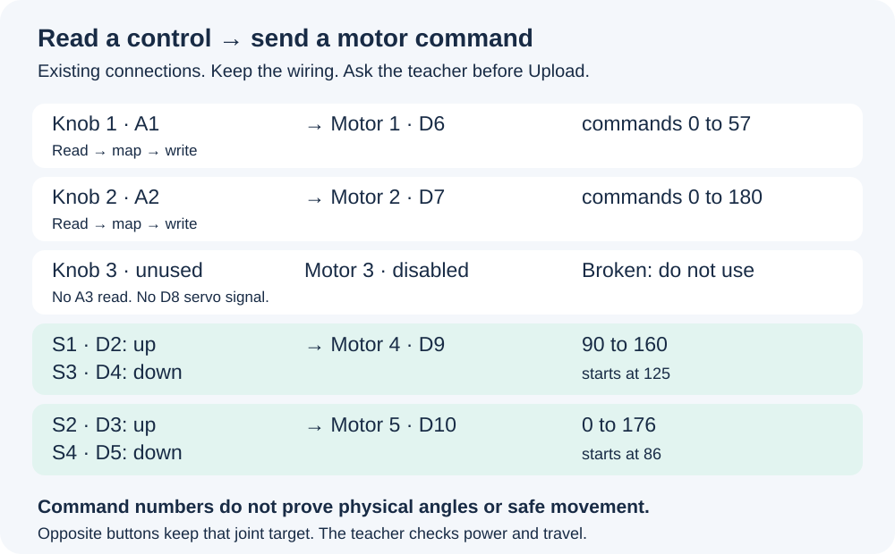

In this guide
This program uses four working servos: motor1, motor2, motor4 and motor5. Two knobs and four buttons control them. Motor3 is broken and disabled. A servo moves toward a chosen position.
Find knobs 1 and 2 and buttons S1 to S4. Leave knob 3 unused. Keep the model disconnected while writing code.
Check: You can point to the six active controls. Motor3 and its A3 knob are not used. Keep the existing wiring.
Do not change the existing wiring. The teacher checks the real board, power and safe movement before any Upload.

Arduino IDE > File
A sketch is an Arduino program. Work in one saved team copy so teammates do not replace each other’s changes.
Open the latest numbered team sketch. Save a new numbered copy before editing. For a first session, create and save RoboticHand_01 in Arduino IDE.
Check: You have one editable sketch with a numbered name.
When updating older code, replace the matching setup and button blocks with the corrected steps. Do not append a second setup or extra button blocks. Keep earlier versions. Arduino keeps the INO inside a folder with the same name. Use the approved class computer if the editor is unavailable.
In the sketch editor
setup() runs once when the board starts. loop() repeats while the board runs. Curly braces mark the start and end of each section.
For a new sketch, keep the two empty sections shown below. When continuing, find these sections in your existing code instead of adding duplicates.
Check: One setup() and one loop(), each with { and }. If later code is already present, compare it and add only missing lines; do not duplicate it.
You are preparing code only. Do not click Upload during these early steps.
void setup() {
}
void loop() {
}At the very top, before setup()
#include <Servo.h> loads the servo instructions. Servo names the motor type; motor1 is the name we give one motor. The semicolon ; ends each Servo line.
Add the include line and the four working motor names above setup.
Check: The sketch names motor1, motor2, motor4 and motor5. There is no motor3 object.
Keep the original numbering. Motor3 on D8 is broken and disabled. Do not attach it, write to it or copy its old code back. Keep its A3 control unused.
#include <Servo.h>
Servo motor1;
Servo motor2;
// Motor 3 on D8 is broken and disabled. A3 is unused.
Servo motor4;
Servo motor5;Below the four working Servo lines, before setup()
const int names a fixed pin number. int stores a number that can change. The = sign stores the number on its right in the name on its left.
Add these six lines below the Servo names and above setup().
Check: S1–S4 name pins 2–5. middleAngle starts at 125 and baseAngle at 86.
These are the existing team program’s pin numbers and commands. Do not move wires. A command number does not measure an angle; the teacher checks real starting positions before Upload.
const int S1 = 2;
const int S2 = 3;
const int S3 = 4;
const int S4 = 5;
int middleAngle = 125;
int baseAngle = 86;At the start of setup(), inside its braces
INPUT_PULLUP makes an unpressed button read HIGH and a pressed button read LOW with the checked wiring.
Add these four lines immediately after void setup() {. Move any old attach lines to the later signal-pin step.
Check: All four buttons use INPUT_PULLUP. No motor is attached yet.
LOW means pressed. Copy the capitals and underscore. Keep the board disconnected while writing. We will load all four working targets before attach enables signals.
pinMode(S1, INPUT_PULLUP);
pinMode(S2, INPUT_PULLUP);
pinMode(S3, INPUT_PULLUP);
pinMode(S4, INPUT_PULLUP);Inside setup(), after the four pinMode lines
analogRead reads knob one. map changes its 0-1023 reading into a 0-57 command. write stores that target. Before attach, this stores a target without enabling motor signals.
Add these three lines before any attach line.
Check: Motor1 has a starting target from A1, within 0-57, before its signals start.
The Servo library has a default pulse. Loading our target before attach avoids using that default first. It does not prevent movement toward the loaded target. The teacher must check the starting pose and knob position.
int startPot1 = analogRead(A1);
int startAngle1 = map(startPot1, 0, 1023, 0, 57);
motor1.write(startAngle1);Inside setup(), after the motor1 starting lines
Motor2 needs its own bounded starting target. Use read, map, write again. Motor3 is disabled, so do not add an A3 group.
Add this motor2 group before any attach line.
Check: A2 supplies motor2 with a 0-180 starting command. A3 remains unused.
Check startPot2, startAngle2 and motor2. Do not add motor3 code or widen the range.
int startPot2 = analogRead(A2);
int startAngle2 = map(startPot2, 0, 1023, 0, 180);
motor2.write(startAngle2);Inside setup(), after the two active knob targets
The buttons use remembered commands. Their starting values are middleAngle 125 and baseAngle 86.
Add these two write lines before all four attach lines.
Check: All four working motors have targets loaded before any servo signals are enabled.
These are the existing program values, not measured safe joint angles. Keep the model disconnected. The teacher checks its real pose and allowed travel before Upload.
motor4.write(middleAngle);
motor5.write(baseAngle);At the end of setup(), after all four starting write lines
attach enables servo signals on a pin. Loading every target first prevents the library default from being the first commanded pulse.
Place these four attach lines after the starting targets and before setup closes. Remove any earlier copies and every motor3 attach.
Check: Only D6, D7, D9 and D10 are attached. D8 is never attached. Every starting write comes before the first attach.
Attach can still move the model toward its target. This correction does not measure its current position or make the physical travel safe. Keep the board disconnected and do not Upload unfinished code.
motor1.attach(6);
motor2.attach(7);
motor4.attach(9);
motor5.attach(10);Arduino IDE > Verify, the checkmark button
Verify checks whether the computer can compile your sketch. Compile means translating code into instructions the board can run. Verify does not run the hand.
Choose Arduino Uno for the confirmed FNK0059-compatible control board. Choose Verify with the model disconnected.
Check: The IDE finishes without a compilation error.
The large Freenove Projects Board is an accessory board. The teacher confirms the plugged-in control board and matching IDE selection. If Servo.h is missing, ask for the Servo library. Check the first error, the line above, names, semicolons and braces. Verify checks code; it does not run the model.
At the start of loop(), inside its existing braces
setup reads the knobs once for startup. loop reads them again and again so the motors follow later knob changes.
Add these three lines in order.
Check: A1 supplies pot1, angle1 holds the scaled value, and motor1 receives angle1.
Use pot1 and angle1 here. startPot1 and startAngle1 belong to setup only. map turns the 0-1023 reading into a 0-57 command. Keep that range. Do not add a second loop or use the full-range Sweep example.
int pot1 = analogRead(A1);
int angle1 = map(pot1, 0, 1023, 0, 57);
motor1.write(angle1);Inside loop(), after the three knob-one lines
Use read, map, write again for motor2. Motor3 is broken, so A3 is not read and D8 is not driven.
Add this motor2 group after the knob-one lines inside loop. Remove the old A3 and motor3 group if present.
Check: A2 controls motor2 with 0-180 commands. The sketch has no A3 read or motor3 write.
Check A2, pot2, angle2 and motor2. Keep the knob-one lines. Leave knob 3 unused. The teacher checks the physical movement range.
int pot2 = analogRead(A2);
int angle2 = map(pot2, 0, 1023, 0, 180);
motor2.write(angle2);Inside loop(), after the knobs
S3 moves the middle joint down by increasing its command. bool stores true or false. The first two lines read S3 and S1 once. && means and; ! means not. The if runs only when S3 is pressed and S1 is not.
Replace the old S3 block with these button readings and the guarded increase block.
Check: S3 alone moves the middle joint down. Its command increases up to 160. Both pressed skips this block.
Read both buttons once before either middle block. ++ adds one; the inner if caps the target before write. Keep delay(20). These are new conditions for the existing block, not extra copies.
bool s3Pressed = digitalRead(S3) == LOW;
bool s1Pressed = digitalRead(S1) == LOW;
if (s3Pressed && !s1Pressed) {
middleAngle++;
if (middleAngle > 160) {
middleAngle = 160;
}
motor4.write(middleAngle);
delay(20);
}Inside loop(), after the complete S3 block
S1 moves the middle joint up by decreasing its command. This block uses the same saved button readings. It runs only when S1 is pressed and S3 is not. -- subtracts one.
Replace the old S1 block with this guarded decrease block.
Check: S1 alone moves the middle joint up. Its command decreases to 90. Both middle buttons pressed leaves the target unchanged.
Do not read the middle buttons again between their two blocks. At the top limit, both pressed must keep 160, not move it to 159.
if (s1Pressed && !s3Pressed) {
middleAngle--;
if (middleAngle < 90) {
middleAngle = 90;
}
motor4.write(middleAngle);
delay(20);
}Inside loop(), after the complete S1 block
S4 moves the base joint down by increasing its command. This block runs only when S4 is pressed and S2 is not.
Replace the old S4 block with these two readings and the guarded increase block, after the S1 block.
Check: S4 alone moves the base joint down. Its command increases up to 176. Both base buttons pressed skips this block.
Use s4Pressed and s2Pressed for this pair. Use baseAngle and motor5 for its output. Keep the middle pair above it.
bool s4Pressed = digitalRead(S4) == LOW;
bool s2Pressed = digitalRead(S2) == LOW;
if (s4Pressed && !s2Pressed) {
baseAngle++;
if (baseAngle > 176) {
baseAngle = 176;
}
motor5.write(baseAngle);
delay(20);
}Inside loop(), after the complete S4 block
S2 moves the base joint up by decreasing its command. This block runs only when S2 is pressed and S4 is not. The lower limit keeps baseAngle at or above zero.
Replace the old S2 block with this guarded decrease block, after the S4 block.
Check: S2 alone moves the base joint up. Its command decreases to 0. Both base buttons pressed leaves the target unchanged.
At the top limit, both base buttons pressed must keep 176, not move it to 175. Do not force the physical joint to any numeric endpoint.
if (s2Pressed && !s4Pressed) {
baseAngle--;
if (baseAngle < 0) {
baseAngle = 0;
}
motor5.write(baseAngle);
delay(20);
}At the end of loop(), then Arduino IDE > Verify
A short pause ends each pass through loop(). Verify checks whether the complete code can be translated for the selected board.
Add delay(15); after the complete S2 block, before loop() closes. Choose Verify and save the numbered sketch when it passes.
Check: One setup, one loop, all four guarded button blocks and every limit check compile without errors.
Check that all four startup writes come before the first attach. Check each button condition includes the other button not pressed. Remove every old motor3 declaration, A3 read, motor3 write and D8 attach. Compare with the corrected reference ZIP. Keep the limits. Verify does not prove safe motion.
delay(15);At the assembled model, with the teacher
Servo signals can move the mechanism as soon as an uploaded program starts. Code numbers alone cannot establish safe physical movement.
Show the teacher the saved code. Ask them to check the Freenove control board, module switches, servo power, motor3 isolation, starting pose, active knob positions and allowed movement before Upload.
Check: The teacher has checked the exact saved version and its real startup targets. If that check is unavailable, leave hardware tests unrun.
Knobs 1 and 2 set two startup targets; the middle and base use 125 and 86. Motor3 is broken and disabled. Ask the teacher to isolate its power with the model unpowered. Software disabling is not electrical isolation. Loading targets before attach prevents the initial default pulse, but working joints may still move toward their targets.
Arduino IDE board and port selection, with the teacher
Upload sends your program to the board. The hand can move as soon as setup() starts.
After the hardware check, have the teacher connect the approved model’s USB cable. Select the board and port they identify, then choose Upload with the teacher.
Check: The IDE reports that uploading finished.
Keep hands away from joints. Stop and tell the teacher if a servo strains, a part jams or anything gets hot. If no port appears, ask the teacher to check USB. Do not choose a random board or change wiring. Upload failure is not a passed test.
At the checked model, with the teacher
Correct startup code still sends targets that may differ from the current physical pose. Only a real test shows the movement.
Watch the teacher perform one approved restart from the checked pose and knob settings. Record the starting movement in Test and improvement.
Check: Your note identifies the sketch version, starting settings, actual movement and any strain or unexpected motion.
Keep hands away from joints. Stop and tell the teacher about a jam, strain, heat or a reset. Do not force the mechanism or repeat restarts alone. Write Not run when the check cannot be performed.
At the checked model, with the teacher
Testing one input at a time shows which input caused the response. A correct compile cannot tell us which physical part moved.
Turn knob 1 slowly within the checked range and watch motor1. Repeat separately with knob 2 and motor2. Record both actual responses under Test and improvement.
Check: Each note names the sketch version, expected motor, actual movement and any problem. Knob 3 remains unused.
Do not force an end position. Keep motor3 disabled. Note the checked ranges and physical directions. Write Not run with the reason when hardware is unavailable.
At the checked model, with the teacher
A single pressed button changes one remembered command. Releasing it stops further changes from that button. The servo remains active and may still reach or hold its last target.
Try S1, S2, S3 and S4 separately within the checked range. Release each before trying the next. Add each actual response to the same test note.
Check: S1/S3 command motor4 in opposite directions; S2/S4 command motor5 in opposite directions. Your notes say what actually moved.
Test one button at a time first. S1 and S3 use motor4. S2 and S4 use motor5. Observe physical direction on the actual model. Stop for strain, a jam or heat and tell the teacher.
At the checked model, with the teacher
When both buttons of one pair are pressed, both guarded blocks are skipped. This keeps that joint command unchanged. It is not a power-off or an emergency stop.
After the single-button tests, briefly hold S1 and S3 together at a settled checked position. Release both. Repeat with S2 and S4. Record each result.
Check: Each pair leaves its joint target unchanged. After releasing both, a single button still works.
A joint may still finish moving to its previous target. Test only within the checked range. A middle-pair conflict does not disable the base or knobs. Tell the teacher about unexpected movement; do not change limits to hide it.
Arduino IDE and the test note, with the teacher
Changing one thing lets you see whether that change helped.
If a control failed, compare its input, motor name and limits with the reference. After a teacher-checked correction, Verify and save a new numbered version. Upload that version with the teacher before repeating the failed control test.
Check: Your test note keeps the old result and the new result for the same control.
Do not widen ranges or change wiring to make a failed test pass. Stop physical tests for strain or a jam. If every control worked, state no correction was needed; do not invent a problem.
In your existing team report, under Project
Following one input through the code shows how the program produces an output.
Under Project, explain one knob or button: input, value change, limit and motor. Keep the report headings Project; Research; Test and improvement; References.
Check: Your explanation matches your saved code and test notes. A command limit is not a measured physical angle.
For a knob, follow read → map → write. For a button, follow press → one-step change → limit → write. Under Research, explain one useful source in your own words. Under References, give its organization, title and exact link. The program has no angle sensor or strength test and does not provide automatic grip-and-release.
Your computer file manager and existing team Drive folder
The next editor needs the real code and a clear note about what was checked.
Save the sketch. Compress its whole numbered folder as a ZIP and upload it to the team folder. Check that it contains the matching .ino. Tell the next editor the filename and whether hardware tests ran.
Check: The team has the latest editable program, its ZIP and the matching report. Earlier versions remain available.
A ZIP is a package of files. Do not share only a screenshot or an empty folder. Keep the original sketch. Follow the teacher’s existing Drive and Classroom submission instructions. This guide does not upload code or submit work.